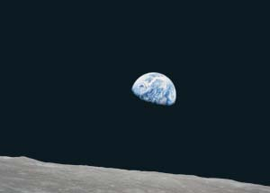
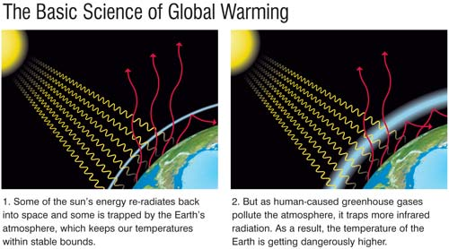
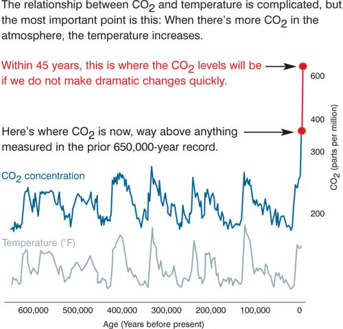

Some experiences are so intense while they are happening that time seems to stop altogether. When it begins again and our lives resume their normal course, those intense experiences remain vivid, refusing to stay in the past, remaining always and forever with us.
Seventeen years ago my youngest child was badly - almost fatally - injured. This is a story I have told before, but its meaning for me continues to change and to deepen.
That is also true of the story I have tried to tell for many years about the global environment. It was during that interlude 17 years ago when I started writing my first book, Earth in the Balance. It was because of my son’s accident and the way it abruptly interrupted the flow of my days and hours that I began to rethink everything, especially what my priorities had been. Thankfully, my son has long since recovered completely. But it was during that traumatic period that I made at least two enduring changes: I vowed always to put my family first, and I also vowed to make the climate crisis the top priority of my professional life.
Unfortunately, in the intervening years, time has not stood still for the global environment. The pace of destruction has worsened and the urgent need for a response has grown more acute.
The fundamental outline of the climate crisis story is much the same now as it was then. The relationship between human civilization and the Earth has been utterly transformed by a combination of factors, including the population explosion, the technological revolution, and a willingness to ignore the future consequences of our present actions. The underlying reality is that we are colliding with the planet’s ecological system, and its most vulnerable components are crumbling as a result.
I have learned much more about this issue over the years. I have read and listened to the world’s leading scientists, who have offered increasingly dire warnings. I have watched with growing concern as the crisis gathers strength even more rapidly than anyone expected.
In every corner of the globe - on land and in water, in melting ice and disappearing snow, during heat waves and droughts, in the eyes of hurricanes and in the tears of refugees - the world is witnessing mounting and undeniable evidence that nature’s cycles are profoundly changing.
I have learned that, beyond death and taxes, there is at least one absolutely indisputable fact: Not only does human-caused global warming exist, but it is also growing more and more dangerous, and at a pace that has made it a planetary emergency.
Less than a year after Earth in the Balance was published, I was elected vice president - ultimately serving for eight years. I had the opportunity, as a member of the Clinton-Gore administration, to pursue an ambitious agenda of new policies addressing the climate crisis.
At that time I discovered, firsthand, how fiercely Congress would resist the changes we were urging them to make, and I watched with growing dismay as the opposition got much, much worse after the takeover of Congress in 1994 by the Republican party and its newly aggressive conservative leaders.
I organized and held countless events to spread public awareness about the climate crisis, and to build more public support for congressional action. I also learned numerous lessons about the significant changes in recent decades in the nature and quality of America’s “conversation of democracy.” Specifically, that entertainment values have transformed what we used to call news, and individuals with independent voices are routinely shut out of the public discourse.
In 1997 I helped achieve a breakthrough at the negotiations in Kyoto, Japan, where the world drafted a groundbreaking treaty whose goal is to control global warming pollution. But then I came home and faced an uphill battle to gain support for the treaty in the U.S. Senate.
In 2000 I ran for president. It was a long and hard-fought campaign that was ended by a 5–4 decision in the Supreme Court to halt the counting of votes in the key state of Florida. This was a hard blow.
I then watched George W. Bush get sworn in as president. In his very first week in office, President Bush reversed a campaign pledge to regulate carbon dioxide (CO2) emissions - a pledge that had helped persuade many voters that he was genuinely concerned about matters relating to the environment.
Soon after the election, it became clear that the Bush-Cheney administration was determined to block any policies designed to help limit global warming pollution. They launched an all-out effort to roll back, weaken, and - wherever possible - completely eliminate existing laws and regulations. Indeed, they even abandoned Bush’s pre-election rhetoric about global warming, announcing that, in the president’s opinion, global warming wasn’t a problem at all.
As the new administration was getting underway, I had to begin making decisions about what I would do in my own life. After all, I was now out of a job. This certainly wasn’t an easy time, but it did offer me the chance to make a fresh start - to step back and think about where I should direct my energies.
At first, I thought I might run for president again, but over the last several years I have discovered that there are other ways to serve, and that I am really enjoying them.
I am also determined to continue to make speeches on public policy, and - as I have at almost every crossroads moment in my life - to make the global environment my central focus.
After the 2000 election, one of the things I decided to do was to start giving my slide show on global warming again. I had first put it together at the same time I began writing Earth in the Balance, and over the years I have added to it and steadily improved it to the point where I think it makes a compelling case, at least for most audiences, that humans are the cause of most of the global warming that is taking place, and that unless we take quick action the consequences for our planetary home could become irreversible.
For the last six years, I have been traveling around the world, sharing the information I have compiled with anyone who would listen. I have traveled to colleges, to small towns and big cities. More and more, I have begun to feel that I am changing minds, but it is a slow process.
In the spring of 2005, I gave my slide show to a large gathering in Los Angeles organized and hosted by environmental activist (and film producer) Laurie David. Afterward, she and another producer, Lawrence Bender, suggested that I ought to consider making a movie out of my presentation. I was skeptical about the idea because I couldn’t see how my slide show would translate to film. But they later came to another slide show and brought Jeff Skoll, founder and CEO of Participant Productions, who expressed interest in backing the project. They also introduced me to a highly talented film veteran, Davis Guggenheim, who expressed interest in directing it. Later, Scott Burns joined the production team and Lesley Chilcott became the co-producer and legendary “trail boss.”
My principal concern in all this was that the translation of the slide show into a film not sacrifice the central role of science for entertainment’s sake. But the more I talked with this extraordinary group, and felt their deep commitment to exactly the same goals I was pursuing, the more convinced I became that the movie was a good idea. If I wanted to reach the maximum number of people quickly, and not just continue talking to a few hundred people a night, a movie was the way to do it. That film, also titled An Inconvenient Truth, has now been made, and I am really excited about it.
But the idea for a book on the climate crisis actually came first. It was my wife, Tipper, who first suggested that I put together a book with pictures and graphics to make the whole message easier to follow, combining many elements from my slide show with all of the new original material I have compiled over the last few years.
Tipper and I are, by the way, giving 100 percent of whatever profits come to us from the book - and from the movie - to a nonprofit, bipartisan effort to move public opinion in the United States to support bold action to confront global warming.
After more than 30 years as a student of the climate crisis, I have a lot to share. I have tried to tell this story in a way that will interest all kinds of readers. My hope is that those who read the book and see the film will begin to feel, as I have for a long time, that global warming is not just about science and that it is not just a political issue. It is really a moral issue.
Although it is true that politics at times must play a crucial role in solving this problem, this is the kind of challenge that ought to completely transcend partisanship. So whether you are a Democrat or a Republican, whether you voted for me or not, I very much hope that you will sense that my goal is to share with you both my passion for the Earth and my deep sense of concern for its fate. It is impossible to feel one without the other when you know all the facts.
I also want to convey my strong feeling that what we are facing is not just a cause for alarm, it is paradoxically also a cause for hope. The Chinese expression for “crisis” consists of two characters side by side. The first is the symbol for “danger,” the second the symbol for “opportunity.”
The climate crisis is, indeed, extremely dangerous. In fact it is a true planetary emergency. Two thousand scientists, in a hundred countries, working for more than 20 years in the most elaborate and well-organized scientific collaboration in the history of humankind, have forged an exceptionally strong consensus that all the nations on Earth must work together to solve the crisis of global warming.
The voluminous evidence now strongly suggests that unless we act boldly and quickly to deal with the underlying causes of global warming, our world will undergo a string of terrible catastrophes, including more and stronger storms like Hurricane Katrina, in both the Atlantic and the Pacific.
We are melting the North Polar ice cap and virtually all of the mountain glaciers in the world. We are destabilizing the massive mound of ice on Greenland and the equally enormous mass of ice propped up on top of islands in west Antarctica, threatening a worldwide increase in sea levels of as much as 20 feet.
The list of what is now endangered due to global warming also includes the stable configuration of ocean and wind currents that has been in place since before the first cities were built almost 10,000 years ago.
We are dumping so much CO2 into the environment that we have literally changed the relationship between the Earth and the Sun (see chart in the Image Gallery). So much of that CO2 is being absorbed into the oceans that if we continue at the current rate we will increase the saturation of calcium carbonate to levels that will prevent formation of corals and interfere with the making of shells by any sea creature.
Global warming, along with the cutting and burning of forests and other critical habitats, is causing the loss of living species at a level comparable to the extinction event that wiped out the dinosaurs 65 million years ago. That event was believed to have been caused by a giant asteroid. This time it is not an asteroid colliding with the Earth and wreaking havoc; it is us.
Last year, the national academies of science in the 11 most influential nations came together to jointly call on every nation to “acknowledge that the threat of climate change is clear and increasing” and declare that the “scientific understanding of climate change is now sufficiently clear to justify nations taking prompt action.”
So the message is unmistakably clear. This crisis means “danger!”
Why do our leaders seem not to hear such a clear warning? Is it simply that it is inconvenient for them to hear the truth?
If the truth is unwelcome, it may seem easier just to ignore it. But we know from bitter experience that the consequences of doing so can be dire.
For example, when we were first warned that the levees were about to break in New Orleans because of Hurricane Katrina, those warnings were ignored. Later, a bipartisan group of members of Congress chaired by Rep. Tom Davis (R-Va.) said in an official report, “The White House failed to act on the massive amounts of information at its disposal,” and that a “blinding lack of situational awareness and disjointed decision-making needlessly compounded and prolonged Katrina’s horror.”
Today, we are hearing and seeing dire warnings of the worst potential catastrophe in the history of human civilization: a global climate crisis that is deepening and rapidly becoming more dangerous than anything we have ever faced.
And yet these clear warnings are also being met with a “blinding lack of situational awareness”- in this case, by the Congress, as well as the president.
As Martin Luther King Jr. said in a speech not long before his assassination: “We are now faced with the fact, my friends, that tomorrow is today. We are confronted with the fierce urgency of now. In this unfolding conundrum of life and history, there is such a thing as being too late.”
But along with the danger we face from global warming, this crisis also brings unprecedented opportunities. There will be plenty of new jobs and new profits - we can build clean engines; we can harness the sun and the wind; we can stop wasting energy; we can use our planet’s plentiful coal resources without heating the planet.
The procrastinators and deniers would have us believe this will be expensive. But in recent years, dozens of companies have cut emissions of heat-trapping gases while saving money. Some of the world’s largest companies are moving aggressively to capture the enormous economic opportunities offered by a clean energy future.
But there’s something even more precious to be gained if we do the right thing.
The climate crisis also offers us the chance to experience what very few generations in history have had the privilege of knowing: a generational mission; the exhilaration of a compelling moral purpose; a shared and unifying cause; the thrill of being forced by circumstances to put aside the pettiness and conflict that so often stifle the restless human need for transcendence; the opportunity to rise.
When we do rise, it will fill our spirits and bind us together. Those who are now suffocating in cynicism and despair will be able to breathe freely. Those who are now suffering from a loss of meaning in their lives will find hope.
When we rise, we will experience an epiphany as we discover that this crisis is not really about politics at all. It is a moral and spiritual challenge. At stake is the survival of our civilization and the habitability of the Earth.
The understanding we will gain - about who we really are - will give us the moral capacity to take on other related challenges that are also desperately in need of being redefined as moral imperatives with practical solutions: HIV/AIDS and other pandemics that are ravaging so many; global poverty; the ongoing redistribution of wealth globally from the poor to the wealthy; the ongoing genocide in Darfur; the ongoing famine in Niger and elsewhere; chronic civil wars; the destruction of ocean fisheries; families that don’t function; communities that don’t commune; the erosion of democracy in America; and the refeudalization of the public forum.
Consider what happened during the crisis of global fascism. At first, even the truth about Hitler was inconvenient. Many in the West hoped the danger would simply go away. They ignored clear warnings and compromised with evil, and waited, hoping for the best.
After the appeasement at Munich, Churchill said: “This is only the first sip, the first foretaste of a bitter cup which will be proffered to us year by year - unless by supreme recovery of moral health and martial vigor, we rise again and take our stand for freedom.”
But when England and then America and our allies ultimately rose to meet the threat, together we won two wars simultaneously in Europe and the Pacific.
By the end of that terrible war, we had gained the moral authority and vision to create the Marshall Plan - and convinced taxpayers to pay for it! We had gained the spiritual capacity and wisdom to rebuild Japan and Europe and launch the renewal of the very nations we had just defeated in war, in the process laying the foundation for 50 years of peace and prosperity.
This too is a moral moment, a crossroads. This is not ultimately about any scientific discussion or political dialogue. It is about who we are as human beings. It is about our capacity to transcend our own limitations, to rise to this new occasion. To see with our hearts, as well as our heads, the response that is now called for. This is a moral, ethical and spiritual challenge.
We should not fear this challenge. We should welcome it. We must not wait. In the words of Dr. King, “Tomorrow is today.”
I began with a description of an experience 17 years ago that, for me, stopped time. During that painful period I gained an ability I hadn’t had before to feel the preciousness of our connection to our children and the solemnity of our obligation to safeguard their future and protect the Earth we are bequeathing to them.
Imagine with me now that once again, time has stopped - for all of us - and before it starts again, we have the chance to use our moral imaginations and to project ourselves across the expanse of time, 17 years into the future, and share a brief conversation with our children and grandchildren as they are living in the year 2023.
Will they feel bitterness toward us because we failed in our obligation to care for the Earth that is their home and ours? Will the Earth have been irreversibly scarred by us? Imagine now that they are asking us: “What were you thinking? Didn’t you care about our future? Were you really so self-absorbed that you couldn’t - or wouldn’t - stop the destruction of Earth’s environment?” What would our answer be?
We can answer their questions now by our actions, not merely with our promises. In the process, we can choose a future for which our children will thank us.
For more information and tips on fighting global warming, see What You Can Do to Help Solve the Climate Crisis.
|
 NASA The first photo of Earth from space many of us ever saw, taken by the Apollo 3 mission on Dec. 24, 1968. This image exploded into the consciousness of humankind, helping spark the modern environmental movement. |
 COURTESY RODALE The Basic Science of Global Warming |
 COURTESY RODALE The relationship between CO2 and temperature is complicated, but the most important point is this: When there’s more CO2 in the atmosphere, the temperature increases. DATA SOURCE: SCIENCE MAGAZINE |